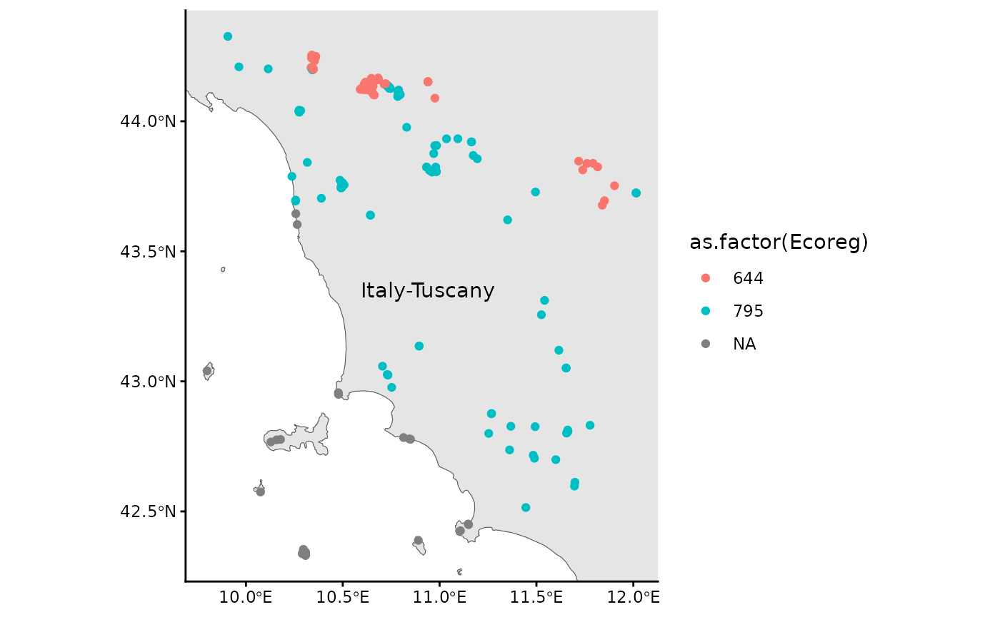

RESY EUNIS habitat classifications
Markus Bauer & Mariasole Calbi
2026-07-07
EUNIS.RmdThis vignette illustrates a common use of the package: to classify
European vegetation surveys to EUNIS habitat types (FloraVeg.EU; Chytrý et al. 2024; European Environment
Agency EUNIS Website) according to
the Expert System (ESy) of Chytrý et al. (2020) (see FloraVeg.EU). The function
resy_harmonize_eunis() incorporates several functions to
collect geographic information about the vegetation survey like the
country, ecoregion, or coastal position. Furthermore, the format of the
coordinates and the taxonomy are checked and adjusted to the
requirements for the expert system (ESy). The function
resy_classify() does the classification of the vegation
surveys including the sites data.
- Prepare the format of the sites including the right coordination system and add information like ecoregion, country or if it is on a coast.
- Check of taxonomy of the species data
- Evaluation of your vegetation surveys and assigning EUNIS habitat types
- Present the results
Example
The following R packages are required to run the example of this vignette:
library(readr)
library(dplyr)
library(ggplot2)
library(sf)
# library(vegdata) # not needed: taxon names are cleaned natively (see below)
library(RESY)Load the example data.
The example data include the species data with the vegetation surveys and the sites data with further information to the location of the surveys.
First, the vegetation surveys:
data_species <- read_csv(system.file("extdata", "data_example_species.csv", package = "RESY"), skip = 0)
data_species
#> # A tibble: 3,580 × 3
#> PlotObservationID cover species
#> <chr> <dbl> <chr>
#> 1 HU32 0.1 Dryopteris filix-mas (L.) Schott
#> 2 HU32 0.1 Cephalanthera longifolia (L.) Fritsch
#> 3 HU32 0.5 Prenanthes purpurea L.
#> 4 HU32 0.5 Anemone nemorosa L.
#> 5 HU32 0.5 Epipactis helleborine (L.) Crantz subsp. helleborine
#> 6 HU32 0.5 Sorbus aucuparia L. subsp. aucuparia
#> 7 HU32 87.5 Fagus sylvatica L.
#> 8 HU32 3 Rubus hirtus Waldst. & Kit.
#> 9 HU32 3 Abies alba Mill.
#> 10 HU32 3 Oxalis acetosella L.
#> # ℹ 3,570 more rows
# clean names with RESY's native cleaner: drops author strings, keeps ranks
data_species$species <- resy_clean_names(data_species$species)
# data_species$species <- vegdata::taxname.removeAuthors(data_species$species)Second, the sites data:
data_sites <- read_csv(
system.file("extdata", "data_example_sites.csv", package = "RESY")
) |>
select(-"cover") |>
st_as_sf(coords = c("Longitude", "Latitude"), crs = 4326)
data_sites
#> Simple feature collection with 200 features and 1 field
#> Geometry type: POINT
#> Dimension: XY
#> Bounding box: xmin: 9.809499 ymin: 42.32483 xmax: 12.08963 ymax: 44.32464
#> Geodetic CRS: WGS 84
#> # A tibble: 200 × 2
#> PlotObservationID geometry
#> * <chr> <POINT [°]>
#> 1 JZ37 (9.93798 44.32464)
#> 2 FR49 (11.09287 43.91546)
#> 3 PT45 (11.65339 43.09104)
#> 4 ZH63 (10.53301 43.73897)
#> 5 TF93 (10.40239 44.23978)
#> 6 KG68 (10.40203 44.24087)
#> 7 QJ27 (10.40635 44.2413)
#> 8 JN90 (10.40602 44.24296)
#> 9 ZM18 (10.66071 44.12734)
#> 10 BQ20 (10.6589 44.12456)
#> # ℹ 190 more rowsPreparation for classification
Apply resy_harmonize_eunis()
First, we have to prepare the sites and the species data with
resy_harmonize_eunis()
parsed <- RESY::resy_load_expert()
outcome <- RESY::resy_harmonize_eunis(
data = data_sites,
source_crs = 25832,
run_taxonomy = TRUE,
species_data = data_species,
parsed = parsed,
run_coast_dunes = TRUE,
coast_buffer = 5000
)
#> Warning in RESY::resy_harmonize_eunis(data = data_sites, source_crs = 25832, :
#> "Altitude (m)" is missing. See mapsforeurope.org for a raster source.
#> Warning in RESY::resy_harmonize_eunis(data = data_sites, source_crs = 25832, :
#> NA values in "Ecoreg": some sites are outside the ecoregion base map.
#> Warning in RESY::resy_harmonize_eunis(data = data_sites, source_crs = 25832, :
#> NA values in "Country": some sites are outside the country base map.
#> Warning: attribute variables are assumed to be spatially constant throughout
#> all geometries
#> Warning: attribute variables are assumed to be spatially constant throughout
#> all geometries
outcome_sites <- tibble(outcome$sites)
outcome_species <- tibble(outcome$species_checked)We have three warnings: The column Altitude (m) is
missing and this could not be covered by
resy_harmonize_eunis(), but we provide a
vignette("Get altitude data"). NAs are in the
ecoregions (Ecoreg) and country (Country)
columns. This could be the vegetation surveys on islands which is not
covered by the base map.
Additional info of ecoregions and countries
Here are the additional information of ecoregions and countries which were successfully identified:
outcome_sites
#> # A tibble: 200 × 9
#> PlotObservationID Coast_EEA Dunes_Bohn Ecoreg Ecoreg_name Country Country_ID
#> <chr> <chr> <chr> <dbl> <chr> <chr> <chr>
#> 1 JZ37 N_COAST N_DUNES 795 Italian scl… Italy IT
#> 2 FR49 N_COAST N_DUNES 795 Italian scl… Italy IT
#> 3 PT45 N_COAST N_DUNES 795 Italian scl… Italy IT
#> 4 ZH63 N_COAST N_DUNES 795 Italian scl… Italy IT
#> 5 TF93 N_COAST N_DUNES 644 Appenine de… Italy IT
#> 6 KG68 N_COAST N_DUNES 644 Appenine de… Italy IT
#> 7 QJ27 N_COAST N_DUNES 644 Appenine de… Italy IT
#> 8 JN90 N_COAST N_DUNES 644 Appenine de… Italy IT
#> 9 ZM18 N_COAST N_DUNES 644 Appenine de… Italy IT
#> 10 BQ20 N_COAST N_DUNES 644 Appenine de… Italy IT
#> # ℹ 190 more rows
#> # ℹ 2 more variables: Longitude <dbl>, Latitude <dbl>Missing info
Let us see which vegetation surveys could not get an ecoregion and country:
outcome_sites |>
filter(is.na(Ecoreg))
#> # A tibble: 23 × 9
#> PlotObservationID Coast_EEA Dunes_Bohn Ecoreg Ecoreg_name Country Country_ID
#> <chr> <chr> <chr> <dbl> <chr> <chr> <chr>
#> 1 OR48 MED_COAST N_DUNES NA NA NA NA
#> 2 EQ56 MED_COAST N_DUNES NA NA NA NA
#> 3 IS69 MED_COAST N_DUNES NA NA NA NA
#> 4 JP48 MED_COAST N_DUNES NA NA NA NA
#> 5 MF17 MED_COAST N_DUNES NA NA NA NA
#> 6 SA50 MED_COAST N_DUNES NA NA NA NA
#> 7 DR59 MED_COAST N_DUNES NA NA NA NA
#> 8 QI21 MED_COAST N_DUNES NA NA NA NA
#> 9 PK58 MED_COAST N_DUNES NA NA NA NA
#> 10 OY37 MED_COAST N_DUNES NA NA NA NA
#> # ℹ 13 more rows
#> # ℹ 2 more variables: Longitude <dbl>, Latitude <dbl>Species on the coast (‘MED_COAST’) often have NAs for
ecoregion and country. This has to be corrected by yourself.
Here is the updated map with ecoregions as differetn colors

Checked species names
Let’s have a look on the checked and transformed species names. There are for example no author names anymore:
outcome_species
#> # A tibble: 1,006 × 3
#> TaxonName matched canonical
#> <chr> <lgl> <chr>
#> 1 Dryopteris filix-mas TRUE Dryopteris filix-mas aggr.
#> 2 Cephalanthera longifolia TRUE Cephalanthera longifolia
#> 3 Prenanthes purpurea TRUE Prenanthes purpurea
#> 4 Anemone nemorosa TRUE Anemone nemorosa
#> 5 Epipactis helleborine subsp. helleborine TRUE Epipactis helleborine aggr.
#> 6 Sorbus aucuparia subsp. aucuparia TRUE Sorbus aucuparia
#> 7 Fagus sylvatica TRUE Fagus sylvatica
#> 8 Rubus hirtus TRUE Rubus fruticosus aggr.
#> 9 Abies alba TRUE Abies alba
#> 10 Oxalis acetosella TRUE Oxalis acetosella
#> # ℹ 996 more rowsClassify the vegetation surveys to EUNIS habitat types
Preparation
Load the expert file which is the base for the evaluation.
# paths <- RESY::resy_example_paths()
# RESY::resy_validate_esy_txt(paths$expertfile_txt)
# ex <- RESY::resy_read_example_data()References
Chytrý M, Řezníčková M, Novotný P et al. (2024) FloraVeg.EU – an online database of European vegetation, habitats and flora. – Applied Vegetation Science 27, e12798. https://doi.org/10.1111/avsc.12798
Bruelheide H, Tichý L, Chytrý M, Jansen F (2021) Implementing the formal language of the vegetation classification expert systems (ESy) in the statistical computing environment R. – Applied Vegetation Science 24, e12562 https://doi.org/10.1111/avsc.12562
Chytrý M, Tichý L, Hennekens SM et al. (2020) EUNIS Habitat Classification: expert system, characteristic species combinations and distribution maps of European habitats. – Applied Vegetation Science 23, 648–675. https://doi.org/10.1111/avsc.12519
Mucina L, Bültmann H, Dierßen K et al. (2016) Vegetation of Europe: hierarchical floristic classification system of vascular plant, bryophyte, lichen, and algal communities. – Applied Vegetation Science 19(Suppl. 1), 3–264.https://doi.org/10.1111/avsc.12257